Recomendação:
Spider-Man (2002) é uma ótima escolha para quem curte ação, emoção e histórias inspiradoras de super-heróis. O filme apresenta a marcante transformação de Peter Parker, um estudante tímido e inteligente, em um herói após ser picado por uma aranha geneticamente modificada. O destaque vai para as cenas de ação eletrizantes e os efeitos visuais que marcaram época. Além disso, o confronto com o Duende Verde traz um vilão intenso e memorável, vivido por Willem Dafoe. A narrativa carrega uma poderosa mensagem sobre responsabilidade e escolhas, eternizada na frase "com grandes poderes vêm grandes responsabilidades". Um filme que mistura aventura, emoção e um protagonista com quem é fácil se identificar — perfeito tanto para fãs de quadrinhos quanto para quem busca uma história envolvente e cheia de significado.
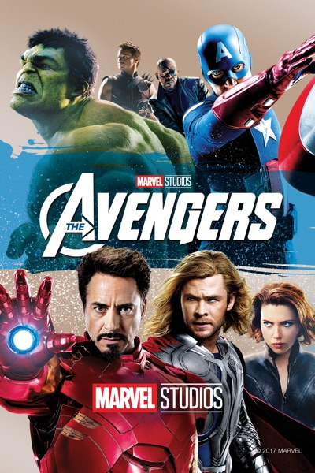
(Os Vingadores - 2012)
Autor/Diretor: Joss Whedon
Recomendação:
Os Vingadores (2012) é um dos filmes mais empolgantes do universo Marvel e uma escolha excelente para quem gosta de ação em grande escala e personagens carismáticos. O longa reúne heróis icônicos como Homem de Ferro, Capitão América, Thor, Hulk, Viúva Negra e Gavião Arqueiro em uma equipe improvável que precisa se unir para salvar o planeta. O destaque vai para as cenas de ação épicas, o humor afiado nos diálogos e a química entre os personagens. Além disso, o filme marca um ponto alto na construção do universo cinematográfico da Marvel, com momentos memoráveis que encantam tanto fãs antigos quanto quem está começando a explorar esse mundo. É uma experiência divertida, cheia de adrenalina e perfeita para assistir com amigos ou família.
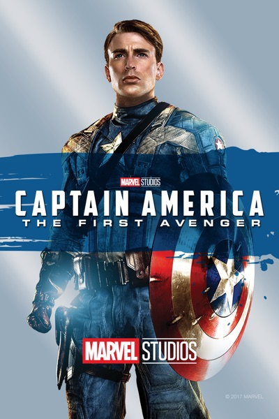
(Capitão América: O Primeiro Vingador - 2011)
Autor/Diretor: Joe Johnston
Recomendação:
Capitão América: O Primeiro Vingador (2011) é uma excelente pedida para quem gosta de filmes de ação com uma pegada histórica e um herói com valores fortes. O filme acompanha Steve Rogers, um jovem corajoso e determinado que, mesmo sendo fisicamente frágil, quer servir seu país durante a Segunda Guerra Mundial. Após um experimento militar, ele se transforma no super soldado Capitão América. O grande atrativo aqui está na construção do personagem: Steve não é apenas forte — ele é um símbolo de coragem, lealdade e sacrifício. O visual retrô, as batalhas contra a Hydra e o vilão Caveira Vermelha completam essa aventura emocionante. É o início ideal para conhecer um dos heróis mais importantes do universo Marvel, em uma história que mistura ação, emoção e ideais heroicos de forma envolvente.
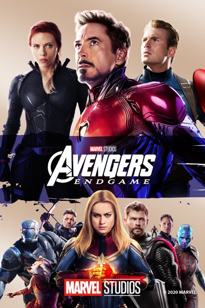
(Vingadores: Ultimato - 2019)
Autor/Diretores: Anthony e Joe Russo
Recomendação:
Vingadores: Ultimato (2019) é mais do que um filme — é um verdadeiro evento cinematográfico que marcou gerações de fãs da Marvel. Após os trágicos acontecimentos de Guerra Infinita, os heróis que restaram precisam lidar com as perdas e encontrar uma maneira de desfazer o caos causado por Thanos. Com um enredo emocionante, cheio de reviravoltas, momentos épicos e despedidas marcantes, o filme entrega uma conclusão grandiosa para mais de uma década de histórias interligadas. É altamente recomendado para quem busca ação de tirar o fôlego, emoção genuína e o encerramento épico de uma saga que redefiniu o cinema de super-heróis. Com cenas inesquecíveis e personagens no auge de sua profundidade, Ultimato é obrigatório para fãs da Marvel — e imperdível mesmo para quem só quer assistir a um ótimo filme.
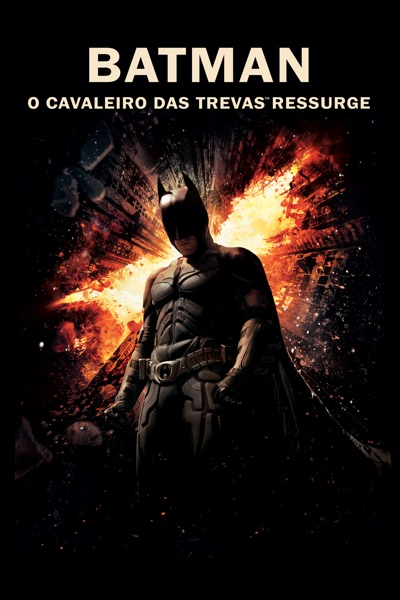
(Batman: O Cavaleiro das Trevas Ressurge - 2012)
Autor/Diretor: Christopher Nolan
Recomendação:
Batman: O Cavaleiro das Trevas Ressurge (2012) é o épico encerramento da trilogia de Christopher Nolan, trazendo uma conclusão intensa, sombria e emocionante para a jornada do Cavaleiro de Gotham. O filme se passa oito anos após os eventos do segundo longa, com Bruce Wayne recluso e marcado pelos traumas do passado. Quando um novo inimigo implacável, Bane, ameaça destruir Gotham, Batman precisa sair das sombras e enfrentar seu maior desafio. O roteiro inteligente, a direção precisa e as atuações marcantes — especialmente de Christian Bale, Tom Hardy e Anne Hathaway — fazem deste filme um espetáculo visual e emocional. É altamente recomendado para quem gosta de ação com profundidade, dilemas morais e cenas grandiosas. Uma história sobre sacrifício, redenção e a verdadeira força de um herói.
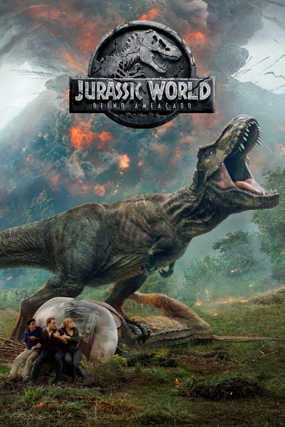
(Jurassic World: Reino Ameaçado - 2018)
Autor/Diretor: J.A. Bayona
Recomendação:
Jurassic World: Reino Ameaçado (2018) é uma ótima pedida para quem curte ação, suspense e, claro, dinossauros em escala épica. A história começa quando um vulcão ameaça destruir a Ilha Nublar, lar dos dinossauros sobreviventes. Claire e Owen retornam à ilha para tentar salvar as criaturas, mas logo descobrem uma conspiração sombria envolvendo clonagem e o tráfico de espécies pré-históricas. Com cenas de tensão intensa, efeitos visuais impressionantes e criaturas cada vez mais perigosas, o filme oferece uma mistura empolgante de aventura e ficção científica. É ideal para quem gostou do primeiro Jurassic World e quer ver a franquia evoluir para uma história mais sombria e cheia de reviravoltas. Uma experiência cinematográfica cheia de ação e criaturas fascinantes.
😂 - Filmes de Comédia
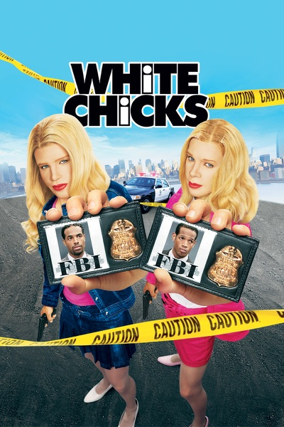
(As Branquelas - 2004)
Autor/Diretor: Keenen Ivory Wayans
Recomendação:
As Branquelas (2004) é uma comédia hilária que se tornou um clássico cult no Brasil e no mundo. Se você está procurando um filme leve, cheio de cenas absurdas e risadas garantidas, essa é a escolha certa. A história acompanha dois agentes do FBI que, para resolver um sequestro, se disfarçam como duas socialites ricas — e o resultado é uma sequência de situações exageradas, confusões em festas da elite e piadas que se tornaram inesquecíveis. O carisma dos irmãos Wayans, o humor escrachado e os momentos icônicos (como a cena do carro ao som de "A Thousand Miles") fazem desse filme uma ótima pedida para quem quer se divertir e esquecer dos problemas. Uma comédia perfeita para assistir em grupo e rir do começo ao fim.
(Gente Grande - 2010)
Autor/Diretor: Dennis Dugan
Recomendação:
Gente Grande (2010) é uma comédia divertida e descontraída que fala sobre amizade, família e os altos e baixos da vida adulta. O filme acompanha um grupo de cinco amigos de infância que se reencontram anos depois para o funeral do antigo técnico de basquete. Eles decidem passar um fim de semana juntos com suas famílias, e o resultado é uma mistura de nostalgia, confusão e muitas risadas. Com um elenco de peso, incluindo Adam Sandler, Kevin James, Chris Rock, David Spade e Rob Schneider, o filme aposta no humor leve e nas situações do cotidiano para divertir. É uma ótima escolha para quem quer relaxar com uma história simples, personagens carismáticos e um clima de união que aquece o coração. Perfeito para assistir com amigos ou em família.
(Minha Mãe é uma Peça - 2013)
Autor/Diretor: André Pellenz
Recomendação:
Minha Mãe é uma Peça (2013) é uma comédia brasileira irresistível que mistura humor e emoção na medida certa. Baseado na peça de Paulo Gustavo, que também estrela o filme, a história gira em torno de Dona Hermínia — uma mãe superprotetora, engraçada, exagerada e completamente dedicada aos filhos. Quando eles decidem se afastar, ela entra em crise e começa a repensar sua vida. O filme conquista o público com situações familiares hilárias, falas marcantes e uma personagem que representa muitas mães brasileiras. É uma ótima pedida para rir bastante e, ao mesmo tempo, se emocionar com os dilemas e o amor incondicional de uma mãe. Leve, divertido e cheio de coração — ideal para assistir com a família.
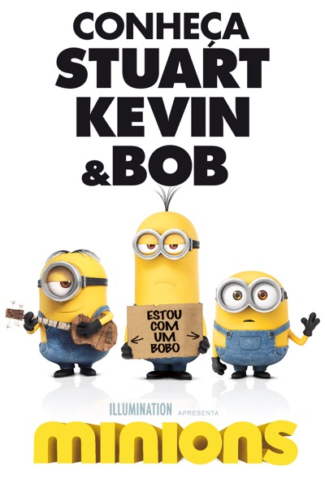
(Minions - 2015)
Autor/Diretor: Kyle Balda e Pierre Coffin
Recomendação:
Se você gosta de animações engraçadas e cheias de carisma, Minions (2015) é uma ótima pedida! Neste divertido filme, conhecemos mais de perto Bob, Kevin e Stuart — três minions atrapalhados e adoráveis que saem em uma missão para encontrar o maior vilão da história e servir a ele. A aventura os leva a lugares inesperados, com muito humor, trapalhadas e situações malucas. O visual colorido, a linguagem única dos minions e o ritmo acelerado garantem a diversão para todas as idades. É um filme perfeito para assistir com a família, com crianças ou até sozinho, se você estiver precisando dar boas risadas. Bob, Kevin e Stuart vão conquistar seu coração com sua fofura e caos contagiante!
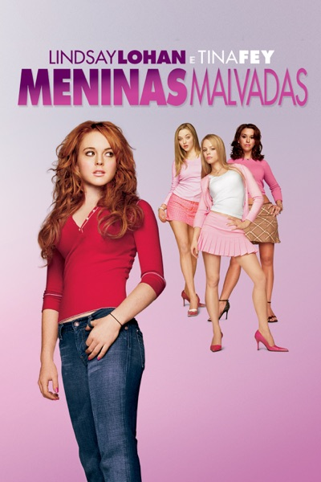
(Meninas Malvadas - 2004)
Autor/Diretora: Mark Waters | Roteiro: Tina Fey
Recomendação:
Meninas Malvadas (2004) é uma comédia teen inteligente, afiada e cheia de frases icônicas que atravessaram gerações. A trama acompanha Cady Heron, uma garota que sempre estudou em casa e, ao entrar para uma escola pública, se vê envolvida no mundo das “Plastics” — o grupo mais popular (e venenoso) do colégio. O filme mistura humor com crítica social, mostrando as pressões do ensino médio, os jogos de status e as armadilhas da falsidade. É uma escolha perfeita para quem gosta de histórias sobre amadurecimento com um toque sarcástico e personagens marcantes. Além disso, o roteiro de Tina Fey entrega diálogos memoráveis e situações hilárias que ainda são lembradas até hoje. Um clássico moderno que é divertido, ácido e surpreendentemente verdadeiro.
(Esposa de Mentirinha - 2011)
Autor/Diretor: Dennis Dugan
Recomendação:
Esposa de Mentirinha (2011) é uma comédia romântica leve e divertida, perfeita para quem gosta de histórias cheias de confusões amorosas e situações inusitadas. No filme, Adam Sandler interpreta um cirurgião plástico que finge estar em um casamento infeliz para conquistar mulheres, mas tudo se complica quando ele se apaixona de verdade. Para manter a mentira, ele convence sua assistente (vivida por Jennifer Aniston) a fingir ser sua ex-esposa, levando todos a uma viagem para o Havaí com muitas cenas engraçadas, momentos fofos e reviravoltas. A química entre os protagonistas e o clima tropical tornam o filme ainda mais envolvente. É ideal para quem quer relaxar, rir e acompanhar uma história leve com romance e boas risadas.
🎨 - Filmes de Animação
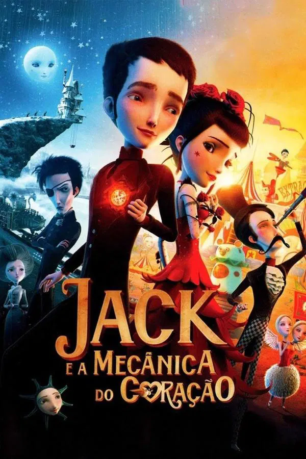
(Jack e a Mecânica do Coração - 2013)
Autor/Diretor: Stéphane Berla, Mathias Malzieu
Recomendação:
Jack e a Mecânica do Coração (2013) é uma animação encantadora e visualmente deslumbrante, baseada no livro de Mathias Malzieu, que também assina a direção. A história segue Jack, um menino que nasce com um coração frágil e é salvo por um relojoeiro que o substitui por um relógio de cuco. Embora o relógio seja uma maravilha tecnológica, ele vem com regras rigorosas — a principal delas é que Jack não pode se apaixonar, pois o coração de cuco pode parar a qualquer momento. O filme mistura elementos de conto de fadas com uma trilha sonora marcante e um estilo visual único, com influências de steampunk e fantasia. Se você gosta de histórias que exploram os temas do amor, da perda e do destino, com uma animação rica e uma narrativa emocionalmente envolvente, este é o filme perfeito para você.
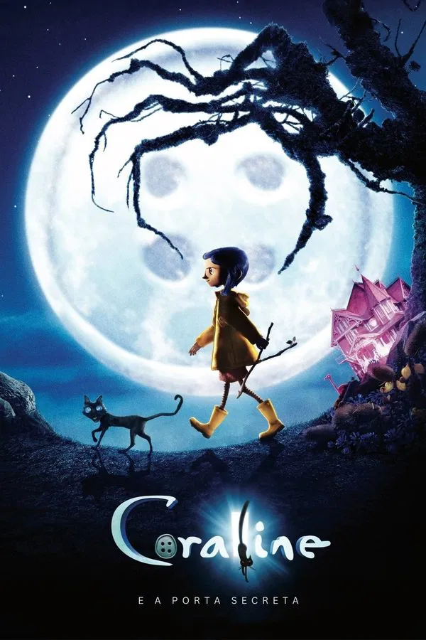
(Coraline - 2009)
Autor/Diretor: Henry Selick
Recomendação:
Coraline (2009) é uma animação sombria e fascinante que mistura fantasia, mistério e um toque de terror psicológico. A história segue Coraline, uma menina curiosa que, ao explorar sua nova casa, encontra uma porta secreta que a leva para um mundo paralelo. Nesse lugar, tudo parece ser melhor — sua “Outra Mãe” é atenciosa e seu “Outra Pai” é perfeito. No entanto, logo Coraline descobre que esse mundo perfeito esconde segredos perigosos, e ela deve encontrar uma maneira de escapar antes que seja tarde demais. O filme é uma verdadeira obra-prima visual, com uma animação stop-motion impressionante e uma atmosfera única que mistura o lúdico e o macabro. É ideal para quem gosta de histórias com personagens fortes, mistérios intrigantes e uma sensação de desconforto crescente. Uma animação que, embora voltada para o público jovem, também conquista adultos com sua profundidade e atmosfera gótica.
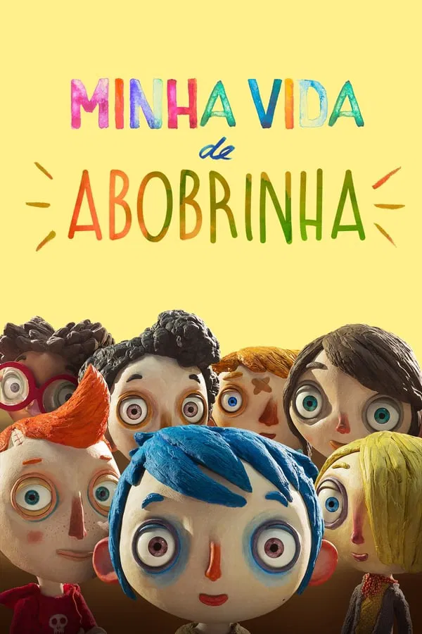
(Minha Vida de Abobrinha - 2016)
Autor/Diretor: Claude Barras
Recomendação:
Minha Vida de Abobrinha (2016) é uma animação sensível e profunda que toca em temas de perda, amizade e superação, tudo isso com uma abordagem única e delicada. O filme acompanha Icare, um menino de 9 anos que é chamado de "Abobrinha" por sua mãe. Após um trágico incidente, ele vai parar em um orfanato, onde conhece outras crianças com suas próprias histórias de sofrimento e resiliência. Através de suas relações com os outros órfãos, especialmente com uma menina chamada Camille, Abobrinha começa a entender o verdadeiro significado de família e amor. Com uma animação encantadora em stop-motion, o filme aborda temas sérios de forma acessível e emocionante, sendo uma ótima escolha para quem aprecia uma história tocante, que mistura dor e esperança de maneira comovente. Uma obra-prima que encanta tanto crianças quanto adultos, pela sua sinceridade e beleza emocional.
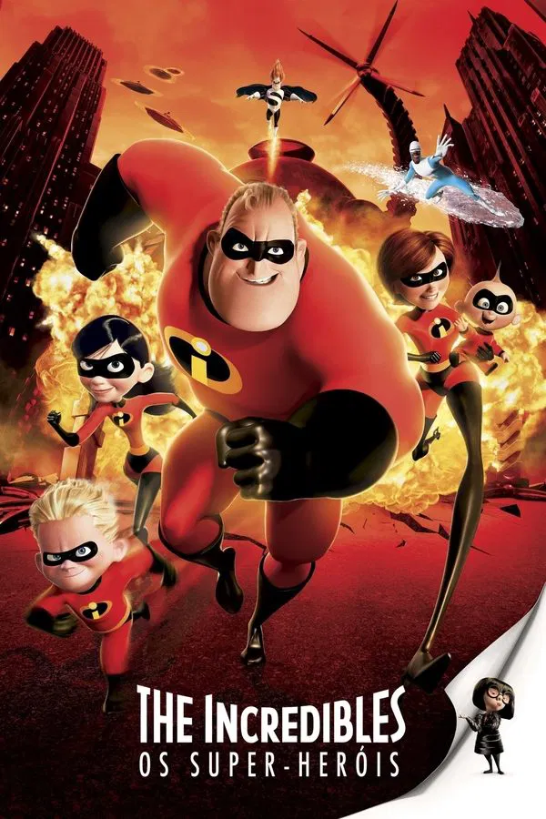
(Os Incríveis - 2004)
Autor/Diretor: Brad Bird
Recomendação:
Os Incríveis (2004) é uma animação que mistura ação, aventura e uma profunda reflexão sobre família e identidade. A história segue a família Parr, onde todos têm superpoderes, mas, devido a uma lei que proíbe heróis de atuar publicamente, eles vivem uma vida comum tentando se manter fora dos holofotes. Porém, quando um novo vilão surge, a família precisa se unir novamente e colocar seus poderes à prova para salvar o mundo. O filme é uma verdadeira obra-prima da Pixar, com uma narrativa envolvente, personagens carismáticos e um equilíbrio perfeito entre humor e drama. A animação traz uma abordagem madura sobre o conceito de heroísmo e as dinâmicas familiares, tornando-a uma excelente escolha tanto para crianças quanto para adultos. Se você busca um filme que seja ao mesmo tempo emocionante, divertido e inteligente, "Os Incríveis" é uma opção imperdível.
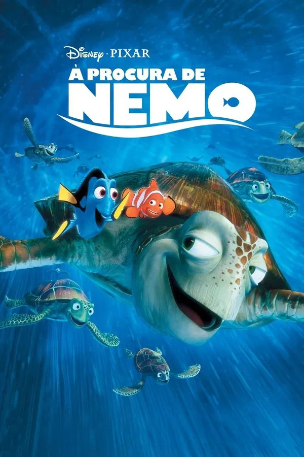
(Procurando Nemo - 2003)
Autor/Diretor: Andrew Stanton
Recomendação:
Procurando Nemo (2003) é uma animação da Pixar que mistura humor, aventura e emoção, conquistando tanto crianças quanto adultos. A história segue Marlin, um peixe-palhaço superprotetor, que parte em uma jornada épica pelo oceano para resgatar seu filho Nemo, que foi capturado por um mergulhador e colocado em um aquário. Durante a busca, ele conta com a ajuda de Dory, uma peixinha esquecida, mas cheia de boas intenções. O filme é uma verdadeira celebração da paternidade, da amizade e da coragem, e traz uma mensagem poderosa sobre a importância de deixar ir e confiar nas pessoas (e peixes) que amamos. Com visuais deslumbrantes, personagens cativantes e uma trama emocionante, "Procurando Nemo" é uma experiência inesquecível que mistura comédia, drama e lindas lições de vida.
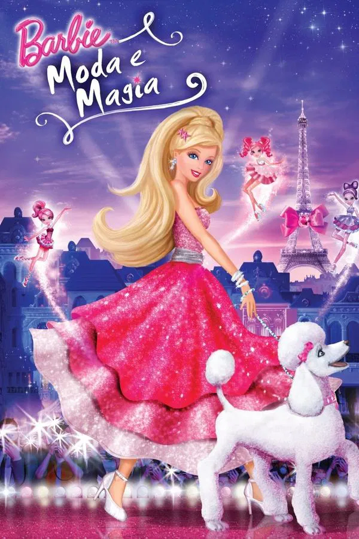
(Barbie: Moda e Magia - 2010)
Autor/Diretor: William Lau
Recomendação:
Barbie: Moda e Magia (2010) é uma animação encantadora que mistura moda, magia e a jornada de autodescoberta de Barbie. No filme, Barbie viaja para Paris, onde descobre que sua tia, uma renomada designer de moda, está enfrentando dificuldades para salvar sua loja de moda. Junto com seus amigos e um toque de magia, Barbie embarca em uma aventura para reviver o mundo da moda e restaurar a magia da sua tia. Com visuais coloridos, personagens fofos e um enredo cheio de momentos de encanto e transformação, "Barbie: Moda e Magia" é uma opção divertida e leve para quem ama o universo da moda e da amizade. Uma animação perfeita para as mais jovens e para quem procura uma história inspiradora sobre criatividade e confiança.